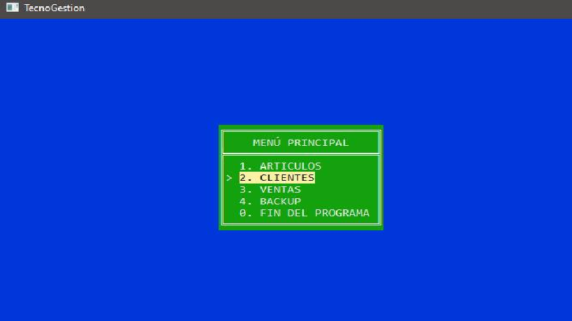
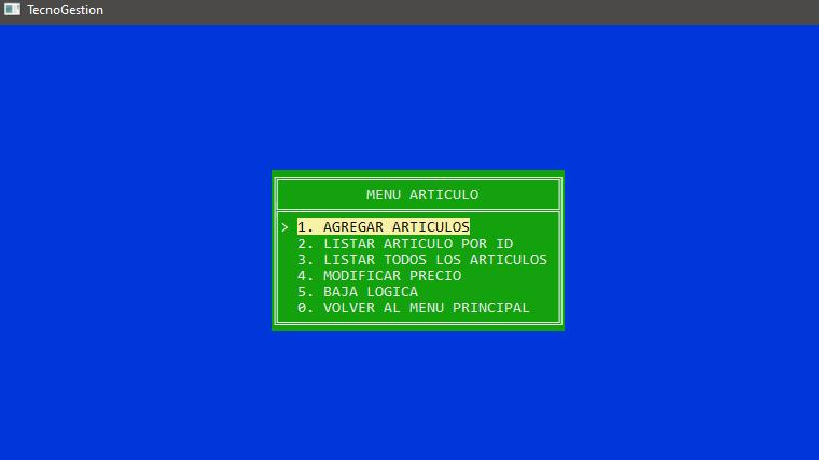
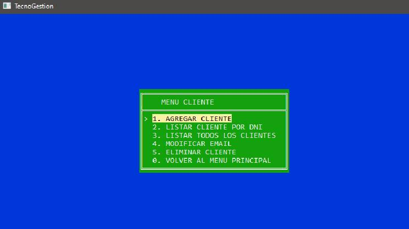
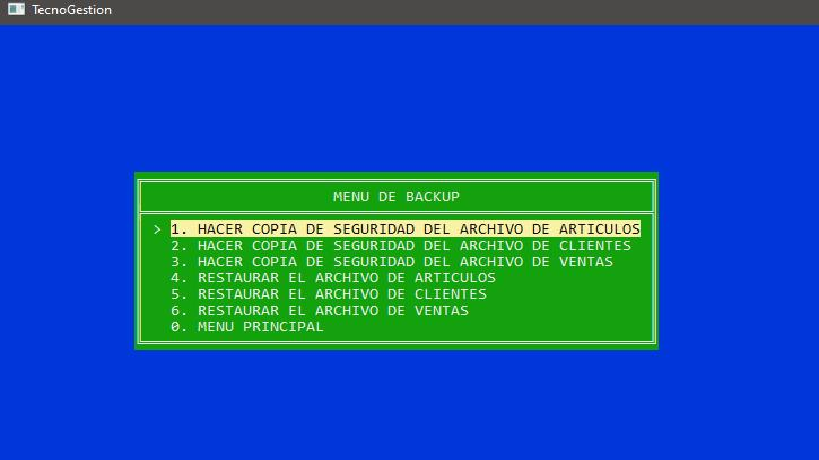

PROYECTO 2: "Tecno-Gestión"
Lenguajes de programación utilizados: C++.
Sistema de gestión de archivos para la venta de insumos de artículos de
tecnología.
El programa realiza una gestión de información de los artículos,
clientes y ventas.
- Se utilizó un archivo .cpp para la ejecución del programa y para la
creación del menú principal.
- Se utilizaron librerías .h para la creación de funciones para el correcto
funcionamiento lógico del programa. También se crearon funciones para el
manejo de archivos que sirven para crear, modificar, borrar y listar toda
la información de los artículos, clientes o ventas que se vayan utilizando.
- Se utilizó la librería ‘rlutil.h’ para el diseño gráfico del programa.
IMÁGENES DEL PROYECTO



